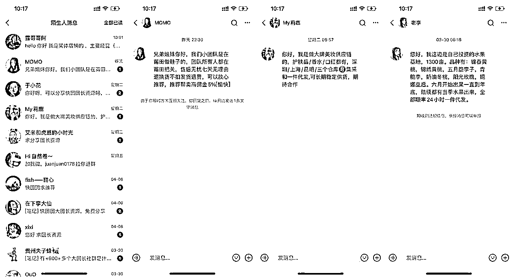

来源：https://qirenjiangxin.feishu.cn/docx/RBo6dSQZnoLZkaxn7eGch1fWnMh
这个项目重点看思路哈，因为它是一个比较小的小项目，但是里面有很多玩法，目前我只用来卖联系方式，其实是很可惜的。希望看到我文章的圈友可以多留言，共享更多的点子，探索更多可能性。
做任何项目前，我的思路就是能够最小成本的实现变现，然后再去思考下一个环节。
引子：帖子里看到通过找团长卖权益卡
这个事情的起因是我在生财的精华贴里看到一篇文章，是通过找快团团团长，让团长帮忙卖权益卡。里面提到大团长的联系方式：可以闲鱼、拼多多找团长联系方式。
然后因为我自己也有货，就想着也需要一份团长的联系方式。然后，我就做了相关的风向标搜寻，发在生财里，没想到中标了。也就是图中的这条风向标。里面有很多圈友分享了看法。
https://t.zsxq.com/0d5qSKHpn
然后我在生财里发起了众筹联系方式，挺多圈友加我的，也给了转了6.6的红包，就这样我获得了第一份初始资料，180+的快团团团长联系方式。第一波小尝试轻松取得成果，所以开始有动力进行下一步操作。
这个大家后续可以研究一下，很有意思。
所以我的设想里多了一步，其实就是让别人扫我的团长订阅码，我赚团长的分销佣金。可惜的是，我没有这个资格。
关于这个功能的获取，我咨询了一些业内的人，得出了解答，大概就是卖的多以后，快团团给你开通的这个分销功能，有会的圈友可以给建议告知，感激不尽。

因为这个是只提供团长订阅码扫码服务，其实都是免费赠送的。所以我也拿到了几个团长的快团团分销码，扫码就可以订阅很多团长。这个也变成我引流环节里的思路。在后面文章里会提到。
所以我继续通过我之前发布的风向标，来进行测试。是这一条风向标，大家可以点进去看看，讲的是如何进行拼多多虚拟无货源开店，没想到派上用场啦。
圈友可以看这条风向标，里面有拼多多无货源教程，自动发货。建议都去学习一下。
https://t.zsxq.com/0dRHuX9nU
然后我就分别在两个渠道进行了变现的测试。
我上架了6.6的联系方式链接，直接抄同行的。
没想到上架了就有了自然流量，基本上每天都能出个1-2单，金额虽小，但是意义重大。
闲鱼上的效果比拼多多更牛。
闲鱼的价格是19.9，我卖的是39.9的资料，也就是1700+联系方式那个。
而且一天至少能成交2-3单左右。
这利润真不错。差不多50-60元纯收益。
只是后面闲鱼被别人举报，封了好多天。数据就差了。
经过几天的数据测试，最终发现项目稳定跑的话，每天能增加100+收益不成问题，而且特别轻松，不需要花费太多时间。那么下一步我就开始思考流量的进一步获取。
不得不说小红书是今年的流量红利期。我在做任何项目之前，都会第一时间在小红书上搜索一番，来判断一下流量数据和内容形态，根据小红书的这些内容生产本身，看看我能不能快速起数据。
所以，下面我们从大概几个方面来看看可行性。
小红书里搜索快团团团长资料，能看到很多话题的流量，大概的曝光区间。
几千万的流量，意味着存在着比较大的需求，所以我就开始拆解爆款的笔记。
通过爆款的笔记，我们可以发现，实际上小红书快团团类的爆款笔记特别的好生产。
只要展示足够多的团长资源。
爆款的标题，那就可以生产爆款的笔记。
小红书上实际卖团长联系方式的很少，大家看相关数据好的笔记，你可以看到大多数其实都是在免费分享分销码。就是把自己的分销吗给别人，扫码订阅里面的团长。
下面是我自己根据上面别人的爆款笔记，模仿写的爆款笔记。
你可以看到，笔记的点赞就算只有十几个，但是通过关联群笔记的方式，很快就可以加大量做快团团的用户进群。
然后在群内回复引流信息，全部都加到微信里了。
所以关于内容的生产，最大程度的复刻对方的笔记就行。
因为笔记的生产难度贼低，可能10分钟就能完成这样一篇笔记。
笔记发布完成，一定要做3个操作，一个是关联群聊，
一个是笔记评论置顶群聊邀请码
小号评论笔记内容，说想要就给。进行互动，让用户跟风就行。
然后，笔记一有流量的话，群内就开始进人。
上面讲的都是通过小红书进行快团团团长的资料引流。
但是因为前期我们设置的是免费分享快团团团长资料，所以进入我们的微信后，要想办法进行二次转化，让用户知道可以买客户的联系方式。
我就因为刚开始话术不好，解释不清楚，导致转化很差。后面我迭代了3个版本才拥有了合适的话术和转化。
这个截图版本是同行的，对比我的内容更加的具有诱惑性，甚至教你怎么做快团团。所以大家在做快团团微信变现的时候，就可以参考这个话术。
同行真的是最好的老师，大家如果做转化效果不好，一定要多加几个同行，看看对方怎么卖的，自己直接抄就行了。
迭代出自己的版本。
我在开始的时候说过，我本身也是有货源的，然后我在那些名单里面，做了一些串改。我把自己的快团团信息植入进了名单。我也变成了全国top级的快团团行列。
然后随着我的名单分享给更多的人，我可能也会被更多快团团的货主所看见，潜移默化的曝光了我自己的快团团。
文章分享出来，其实是给大家提供一些解题思路。这个项目一个月可能产生的收益也就3000不到，但是背后的价值原3不止是这3000。
1、私域积累了大量想要做快团团的人。
2、很多人加我是想要学习如何做快团团，如果整合快团团的教程，又是一套知识付费教学。
3、 有的人加过来，只是单纯的通过团长来买货的，找靠谱团长
4、大量的供应链加过来求合作的

今天的分享到此结束了哈，希望能给刚开始进入生财的圈友们一些收获和启发。我主页可以找到我交流玩法哦。希望文章未来可以继续完善。
附一些往期个人生财发布的内容贴，配合起来做流量和变现会更轻松哦。
1、新手小红书一个月从0到1，粉丝500，收入过1.5万，试用大多数小红书玩家
https://t.zsxq.com/0d6EPiAef
2、30+小红书账号私信引流，小红书安全引流私信玩法思路分享
https://t.zsxq.com/0dUpAFSRb